Explore São Paulo
A Brief History
São Paulo began as a Jesuit mission village in 1554 and remained modest until 19th-century coffee exports and later industrialisation transformed it into Brazil's largest metropolis. Italian, Japanese, and northeastern Brazilian migration filled its grid of avenues, parks, and skyscrapers. Avenida Paulista, the historic Sé district, and Ibirapuera Park illustrate how the city became the country's financial engine and a major centre of art and architecture.
Attractions Map
Top Sights & Activities
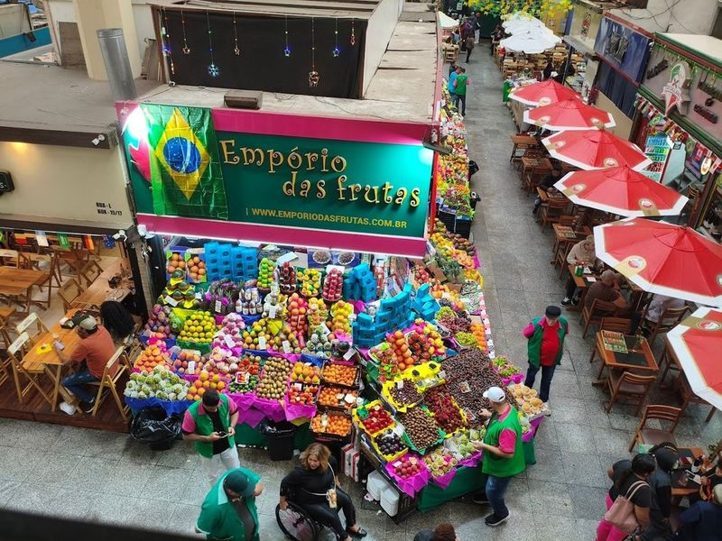
Mercado Municipal de São Paulo
The Mercado Municipal Paulistano, also known as Mercadao, is a historic market located in the old city center of Centro. Built in the 1930s, this magnificent market hall features skylights and stained-glass windows and is bustling with vendors offering rare fruits, vegetables, dairy produce, meat, fish, and more.
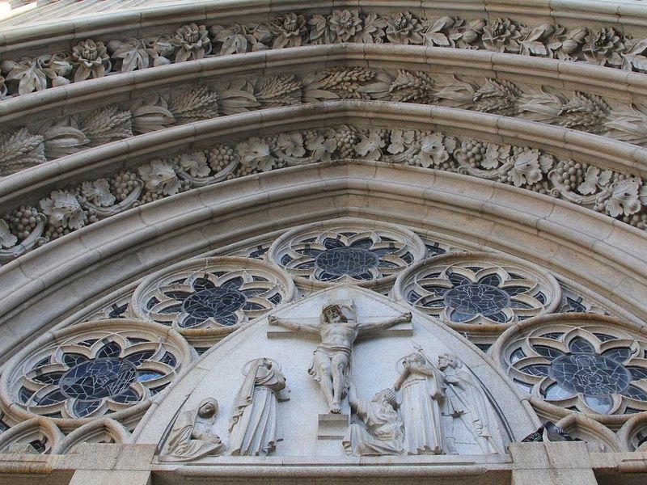
Sé Metropolitan Cathedral
The Catedral Metropolitana da Sé de São Paulo is a neo-Gothic masterpiece that dominates the skyline of São Paulo. Constructed in the early 20th century, this monumental cathedral can accommodate up to 8,000 worshippers and visitors alike. Its architecture features soaring spires and a Renaissance-style dome, making it an landmark in Cathedral Square.
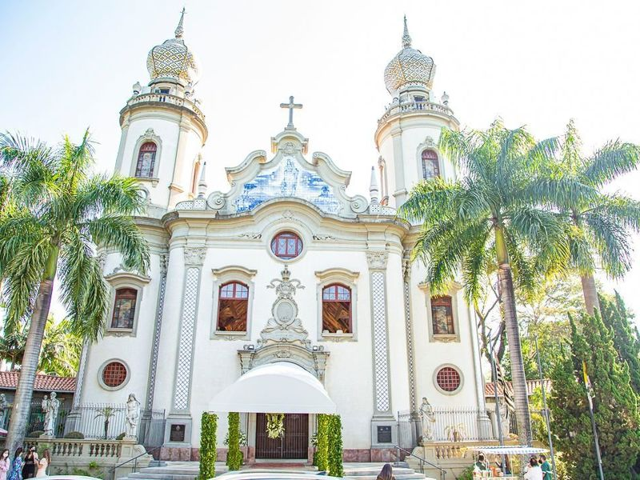
Paróquia Nossa Senhora do Brasil
Paróquia Nossa Senhora do Brasil, a Baroque-style church built in 1940, is dedicated to Lady of Brazil. The design of the church incorporates elements from various remarkable churches around the world, such as ceramic panels reminiscent of St. Basil's in Moscow and towers resembling Muslim minarets. The interior evokes churches in Portugal, while the ceiling features reproductions of paintings from the Sistine Chapel.
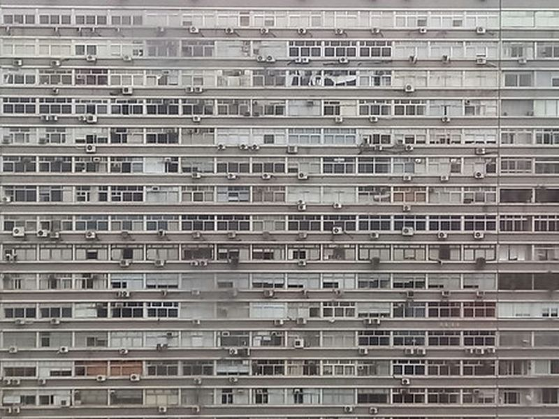
Conjunto Nacional
Conjunto Nacional is a historic shopping complex located on Paulista Avenue in Sao Paulo. Designed by architect David Libeskind, it offers a variety of amenities including dining options, a movie theater, and a gym. The main attraction is the local branch of Livraria Cultura, the largest bookstore in Latin America. Visitors can enjoy comfortable seating areas and even find sections for children.
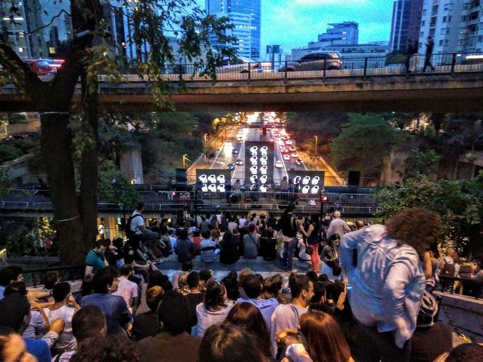
Mirante 9 de Julho
Mirante 9 de Julho is a cultural center housed in a classic mansion built in 1928 by renowned architect Ramos de Azevedo. The venue, originally a tunnel constructed in 1936, now hosts various cultural events such as art exhibitions, music performances, and food fairs. It's known for its Brazilian coffee and brunch options. While there's no car park available, it's easily accessible by subway.
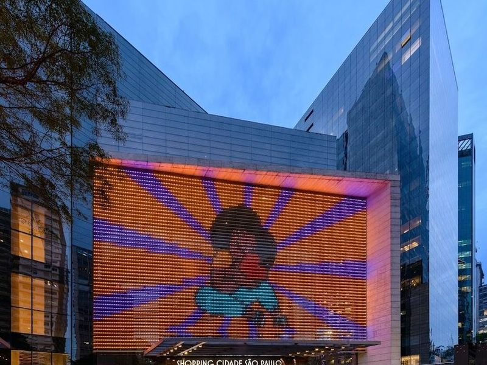
Shopping Cidade São Paulo
Located on the Avenida Paulista, Shopping Cidade São Paulo stands out as a tourist attraction with its six floors and 150 stores, along with modern cinema halls. The mall offers an upscale shopping experience and is considered in Sao Paulo. With trendy boutiques, a food court, cafes, restaurants, and cinemas, it provides a convenient and diverse range of options for visitors.
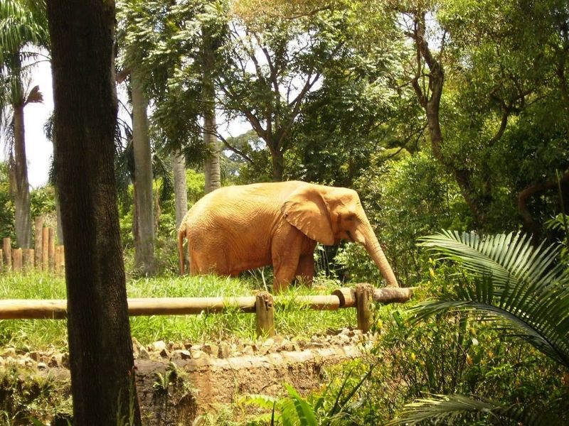
Zoológico de São Paulo
Zoológico de São Paulo is a large zoo nestled in a lush forested area, housing over 3,000 animals and invertebrates. Visitors can engage with various animal species and participate in educational programs. The zoo showcases 444 animal species, totaling up to 3,200 wild creatures. It offers an opportunity to learn about diverse classifications of animals, including wildlife, birds, and predatory animals presented in a unique manner.
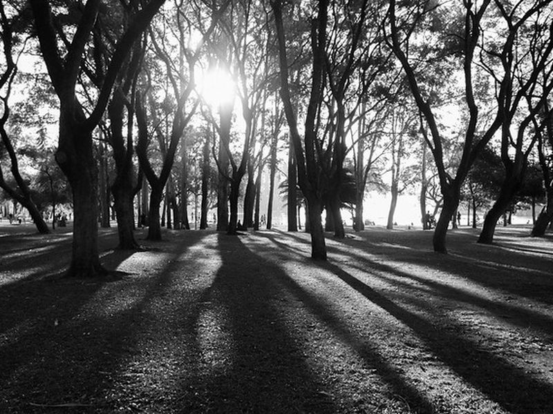
Ibirapuera Park
Ibirapuera Park is a renowned urban park in Sao Paulo, often compared to Central Park. It offers a serene escape from the bustling city, with beautiful landscaping and architecture designed by Oscar Niemeyer. The park features museums, a planetarium, auditoriums, and recreational areas with bike paths and courts. Despite being urbanized, it provides an opportunity to experience Brazilian nature with diverse native fauna and flora.
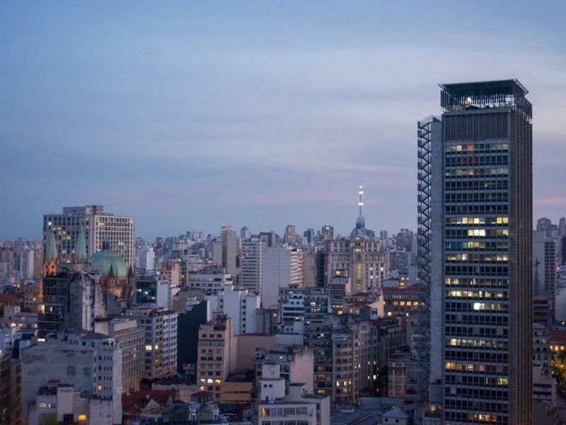
Martinelli Building
The Martinelli Building, Brazil's first skyscraper, stands as a historic landmark in Sao Paulo. Erected in 1929, it played a pivotal role in the city's transformation into a bustling metropolis. This structure boasts a distinctive mansard roof and an inviting 26th-floor terrace offering panoramic views of the city. While primarily serving as office space today, it welcomes visitors to explore its architectural beauty and enjoy the vistas from its rooftop.
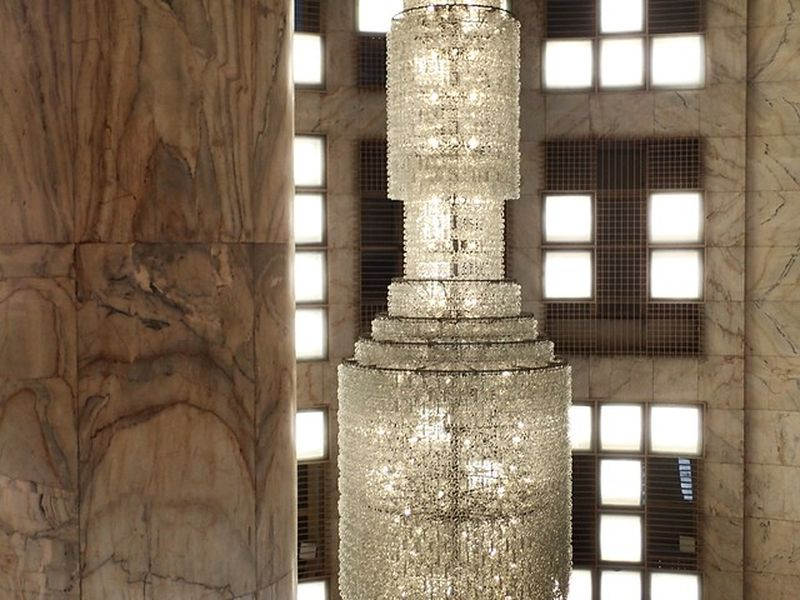
Farol Santander
Located in the heart of Sao Paulo, Farol Santander is a 35-floor skyscraper that offers a variety of cultural experiences and city views. Formerly known as the Banespa building, it now houses the Farol Santander museum, featuring art exhibits and unique dining options like Cafe do 26 and Boteco do 28. The top floors culminate in an observation deck providing panoramic views of the city skyline.
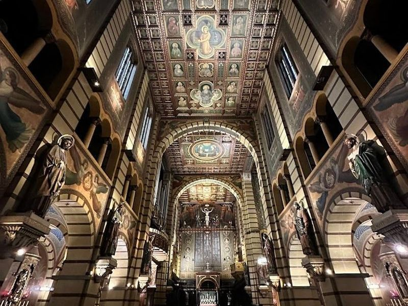
Mosteiro de São Bento
Mosteiro de São Bento is a historic church and monastery located in the Bairro da Liberdade. The monastery, founded in the late 16th century, features an on-site bakery and a church dating back to 1910-22. Despite its austere exterior, the interior is adorned with rich paintings and 17th-century statues of St. Benedict and St. Scholastica carved by Agostinho de Jesus.
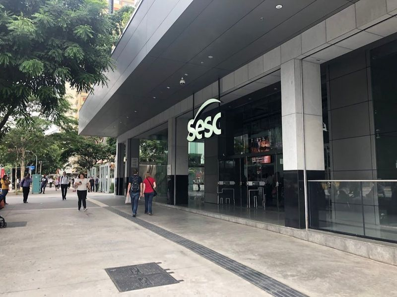
Sesc Avenida Paulista
Sesc Avenida Paulista is a cultural center that offers a variety of activities and attractions. It features a lending library, art exhibitions, and a rooftop deck with city views. The Mirante (Lookout point) on the top floor provides vantage points to admire Sao Paulo's skyline, especially at sunset. Visitors can enjoy coffee and snacks while taking in the panoramic view.
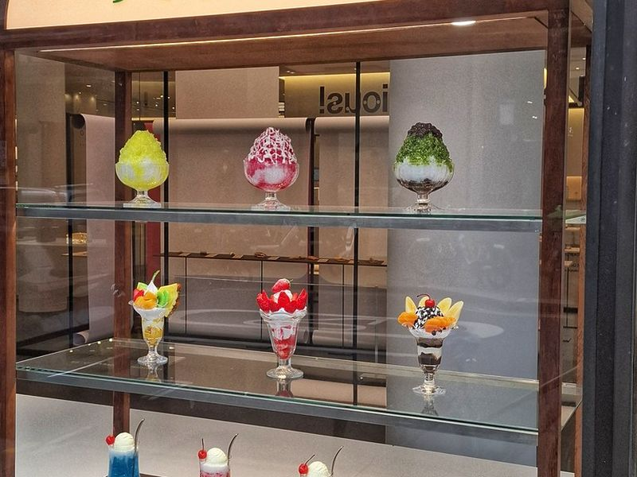
Japan House São Paulo
Japan House São Paulo, located on Avenida Paulista, is a cultural center that showcases the of Japanese culture. The building's unique facade made of imported hinoki wood draws visitors into a 2,500 square meter space featuring exhibition galleries, a library, shops, and Japanese restaurants. Designed by Kengo Kuma and FGMF Arquitetos, this three-story center hosts various exhibits on Japanese architecture, culture, and history.
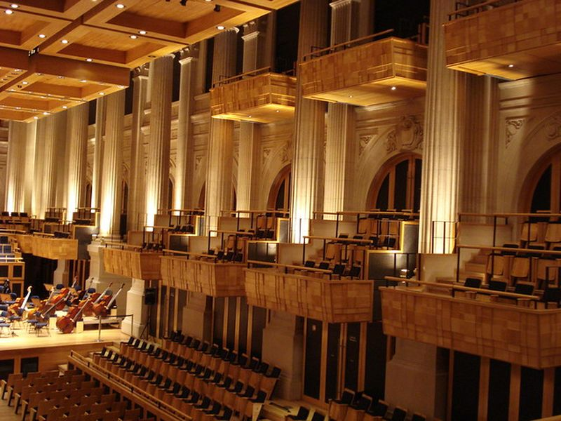
Sala São Paulo
Sala São Paulo is a modern concert hall located in the Luz neighborhood, originally built as a train station hall in 1938. Renovated in 2000, it now features mezzanines, walkways, and 1498 seats. The collaboration between Viva o Centro and foreign architects resulted in advanced acoustic methods that minimize noise and vibrations from the nearby train station. It serves as the base for the Sao Paulo State Symphony Orchestra and is known for its exceptional acoustics.
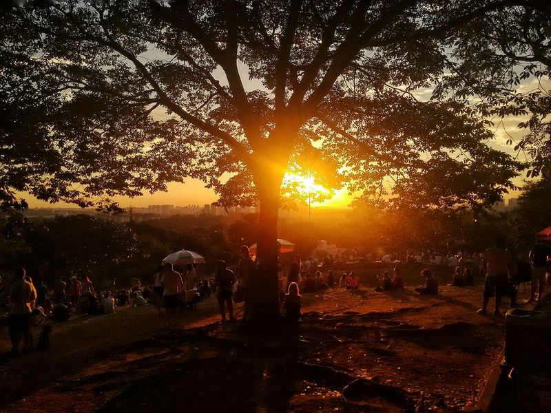
Praça Pôr do Sol
Praça Pôr do Sol, also known as Sunset Square, is a charming green space located in the upscale neighborhood of Alto dos Pinheiros in Sao Paulo. This recreational area offers an open lawn where visitors can enjoy picnics and views of the city and its sunsets. It's a popular spot for couples and people of all ages to gather and witness the sun setting over the western skyline.
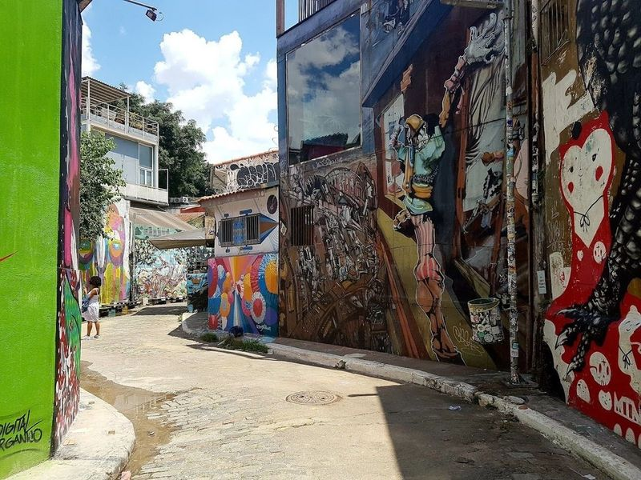
Beco do Batman
Beco do Batman, also known as Batman Alley, is a vibrant and compact area in Vila Madalena, Sao Paulo. It is famous for its cobbled alleyways adorned with colorful graffiti art. This spot boasts the highest concentration of street art in the city, featuring various styles from renowned Brazilian artists like Eduardo Kobra and Os Gemeos.
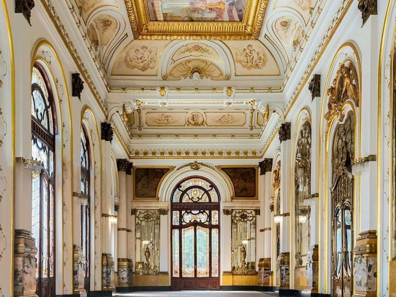
Theatro Municipal de São Paulo
The Theatro Municipal de São Paulo, built in 1911, showcases a blend of Renaissance and baroque architectural styles. It hosts operas, concerts, and ballet performances. Additionally, the theater houses the Museum of the Municipal Theater of São Paulo which collects and preserves historical documents related to the theater's rich history. The museum also features long-term exhibitions on architecture and other related themes.
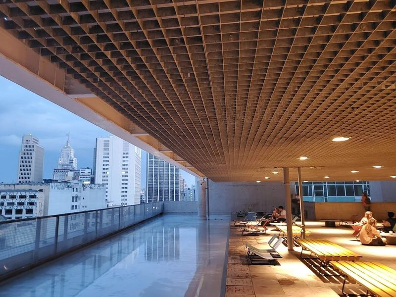
SESC 24 de Maio
SESC 24 de Maio is a remarkable cultural and leisure center located in the old center of Sao Paulo. Designed by renowned architect Paulo Mendes da Rocha, this striking building offers exhibition spaces, a theater, library, workspaces, gymnasium, and a rooftop swimming pool. The architecture beautifully integrates the rugged yet captivating city center into its design. Visitors can enjoy the poetic play of light, concrete structures, and glass walls throughout the space.
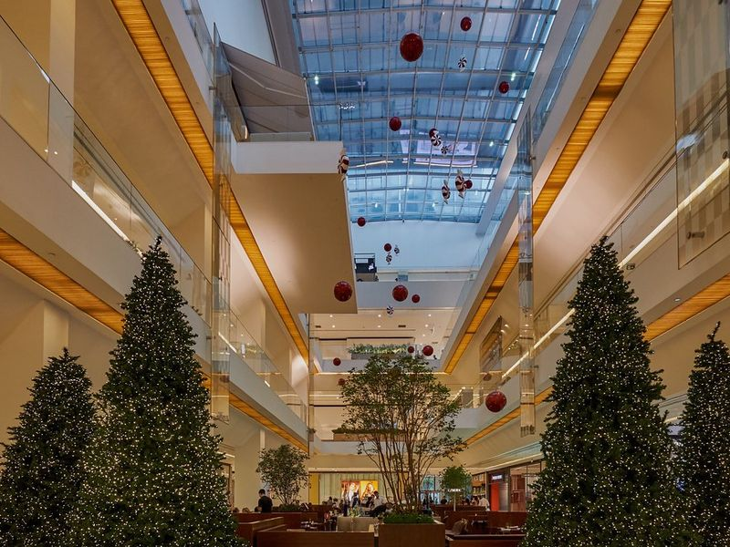
JK Iguatemi
JK Iguatemi is a sophisticated mall located in the affluent Vila Olimpia/Itaim Bibi neighborhood. It has quickly become a must-visit destination for luxury shopping, offering exclusive international and Brazilian brands such as Chanel, Prada, Schutz, and Animale. With 180 designer stores, including AWStore, Bottega Veneta, and Coach, it's a haven for high-end retail therapy.
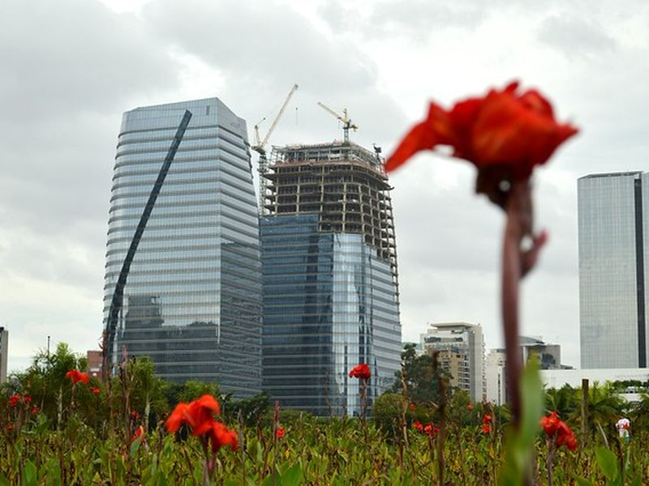
Parque do Povo
Parque do Povo is a large public park in São Paulo's Pinheiros district, opened in 1978 with lawns, playgrounds, and a running track popular with families and athletes. Cultural fairs and outdoor concerts often fill its open meadows. Tree-lined paths and a small lake offer shade and recreation within one of the city's busiest western neighbourhoods.
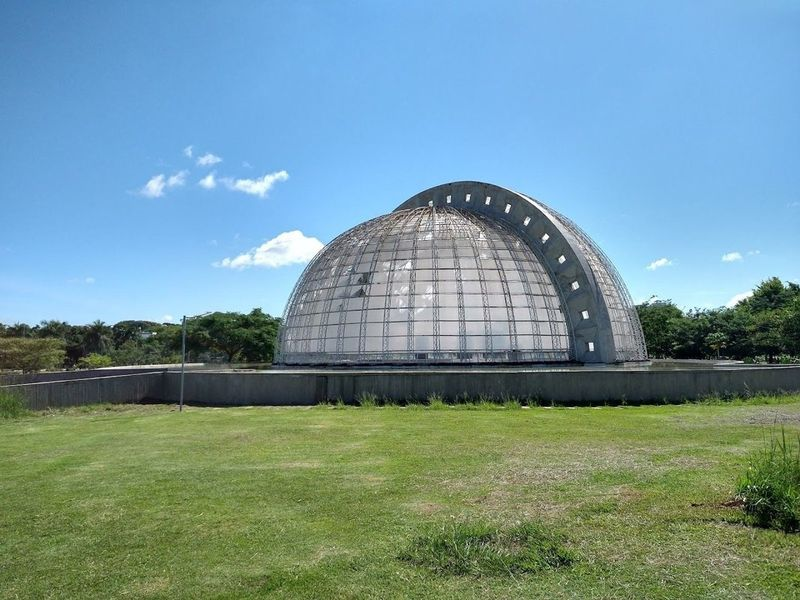
Parque Villa-Lobos
Parque Villa-Lobos, situated in the Alto de Pinheiros neighborhood, is a sprawling park that draws around 8,000 visitors on weekdays and up to 60,000 on weekends. Named after a renowned Brazilian composer, it spans 732,000 square meters and boasts a variety of attractions such as soccer fields, bike paths, playgrounds, an amphitheater and even a library.
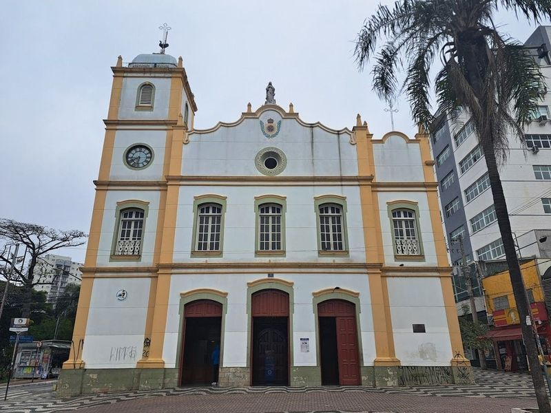
Catedral Diocesana Nossa Senhora da Conceição
Nestled in the heart of Guarulhos, the Catedral Diocesana Nossa Senhora da Conceição is a captivating blend of history and architectural beauty. Established in 1665, this colonial-style church boasts an exquisite blue-tiled interior that enchants visitors upon entry. The ornate altar draws the eye, while the impressive clock tower adds to its charm.
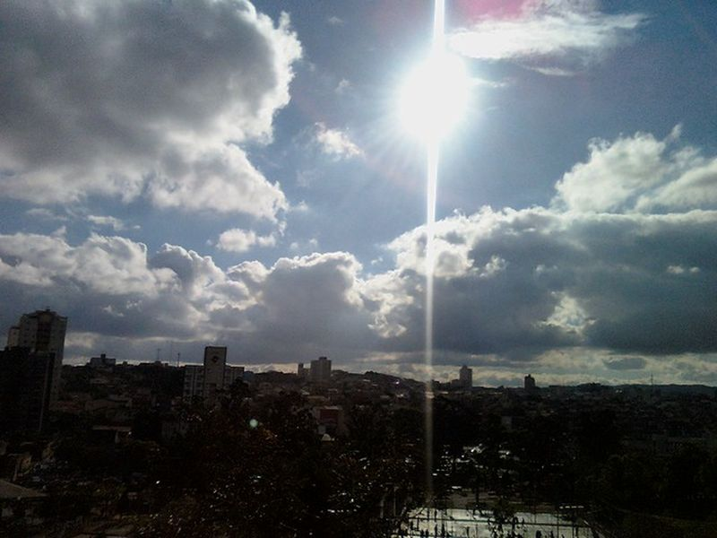
Bosque Maia
Nestled in the heart of Guarulhos, Bosque Maia is a urban oasis that invites visitors to immerse themselves in nature. This expansive park features winding walkways that meander through lush, jungle-like areas, complete with serene water features and cozy café terraces perfect for unwinding. Whether you're looking to enjoy a leisurely stroll or simply relax by one of the picturesque ponds, Bosque Maia offers ample green spaces where soak up the tranquility.
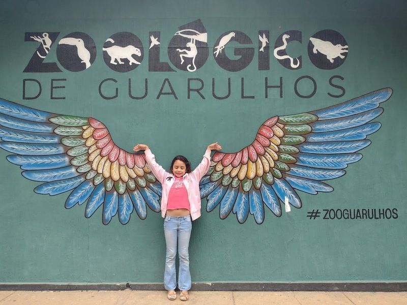
Municipal Zoo of Guarulhos
Located just 25 minutes west of Guarulhos Airport in Franca, the Zoológico Municipal de Guarulhos is a perfect spot for families during a layover. The zoo features a diverse range of animals including lions, jaguars, wolves, hippopotamuses, giraffes, and chimpanzees. It offers an up-close experience with Brazil's wildlife and is popular among kids while providing an educational opportunity.
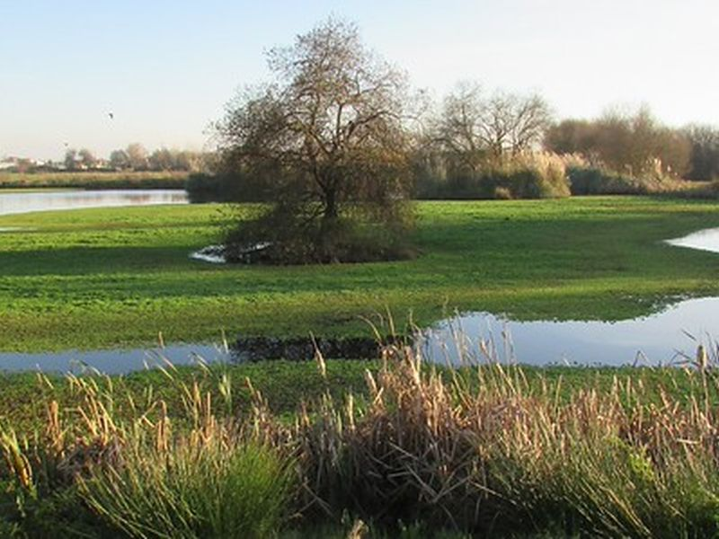
Lago Dos Patos
Lago Dos Patos is a picturesque lake offering various activities for visitors. It features boat rentals, a jogging track, and food stalls, making it an ideal spot for physical activities and leisurely strolls. The area around the lake provides options for dining, including ice cream and barbecue stands. Families can enjoy the scenic beauty of the lake while engaging in activities such as boating and playing with children.
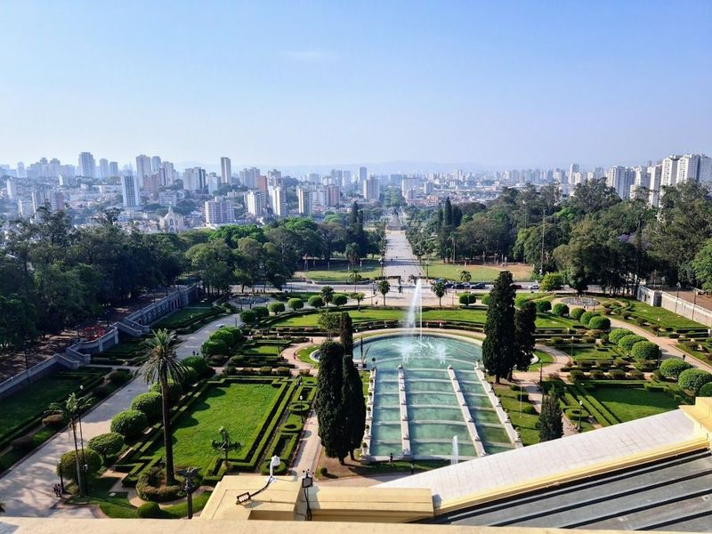
Parque da Independência
Parque da Independência, also known as Independence Park, holds historical significance as the site where Brazil declared its independence from Portugal in 1822. The park features well-maintained gardens and topiary displays, along with monuments and museums such as Museu do Ipiranga (Museu Paulista). While the museum is currently closed for renovation, visitors can still enjoy the expansive 40-acre park for picnics, exercise, and leisurely strolls.
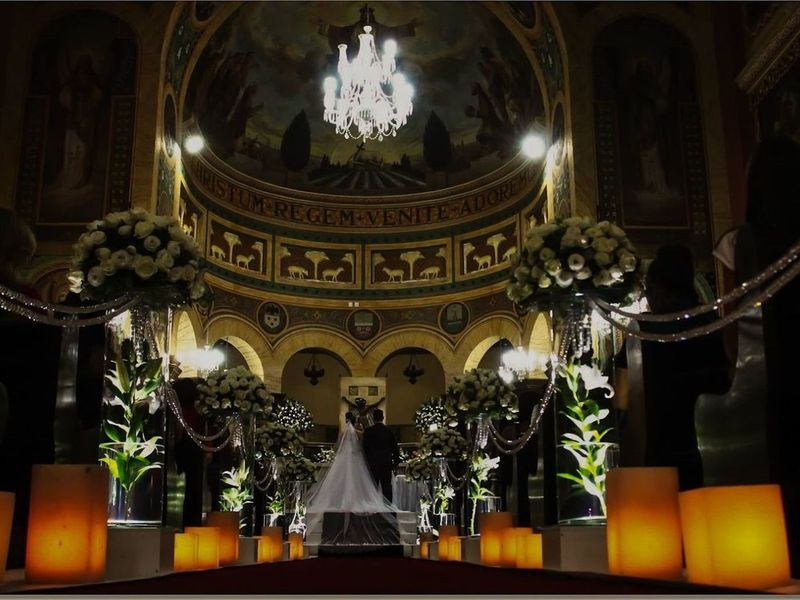
Church of the Holy Family
The Church of the Holy Family is a venue that exudes beauty and spiritual significance, making it an ideal setting for memorable events like weddings. With its impressive architecture and welcoming ambiance, it serves as a perfect backdrop for couples to celebrate their love surrounded by family and friends. The ceremony here is filled with emotion, emphasizing the deep commitment shared between partners.
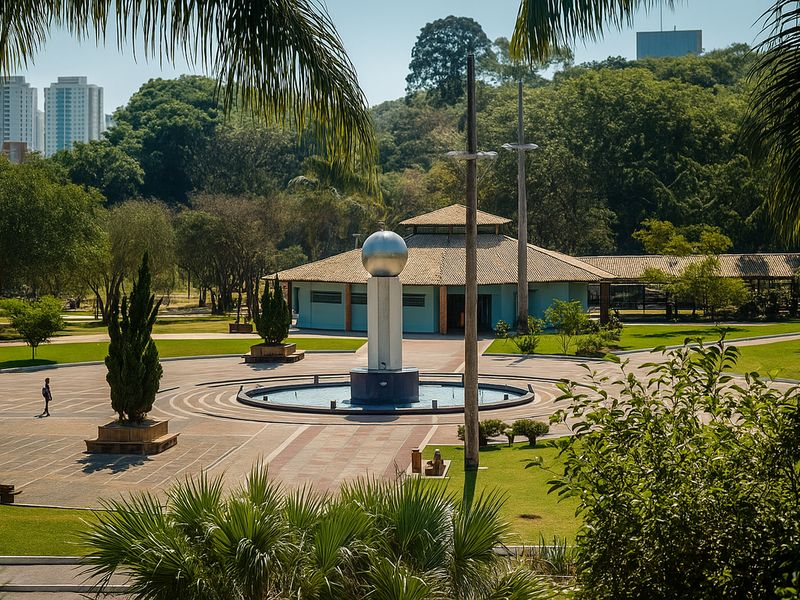
Espaço Verde Chico Mendes
Nestled in the heart of São Caetano do Sul, Espaço Verde Chico Mendes is a sprawling urban park that spans an impressive 140,000 square meters. This green oasis serves as a perfect retreat for those looking to engage in physical activities or simply unwind amidst nature. With facilities like soccer, basketball, and handball courts, along with ping-pong tables and cozy food kiosks, it caters to both sports enthusiasts and families alike.
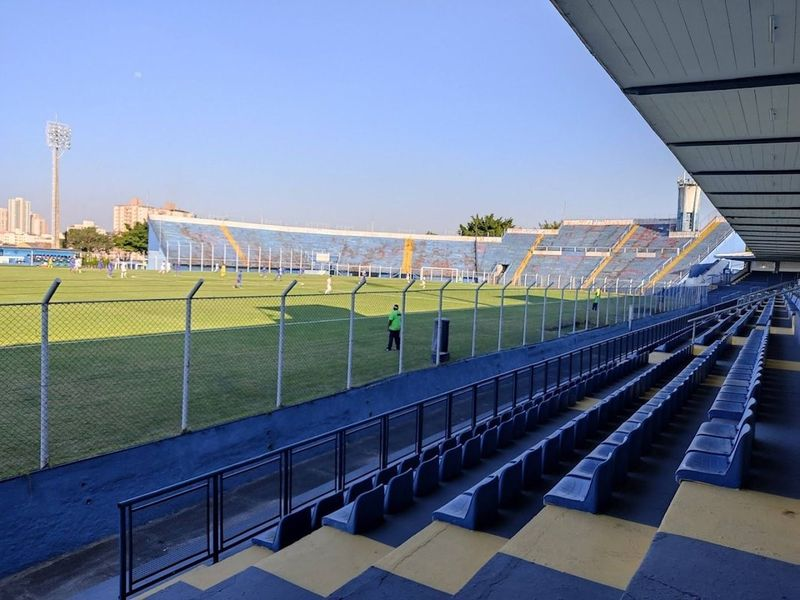
Anacleto Campanella Stadium
Anacleto Campanella Stadium stands as a historic gem in the ABC region, serving as the home ground for São Caetano Futebol Clube. This venue has hosted numerous significant matches in Brazilian football, making it a beloved gathering spot for sports enthusiasts. With a seating capacity exceeding 16,000, the stadium is renowned for its lively atmosphere during games, particularly during crucial matchups that ignite passion among fans.
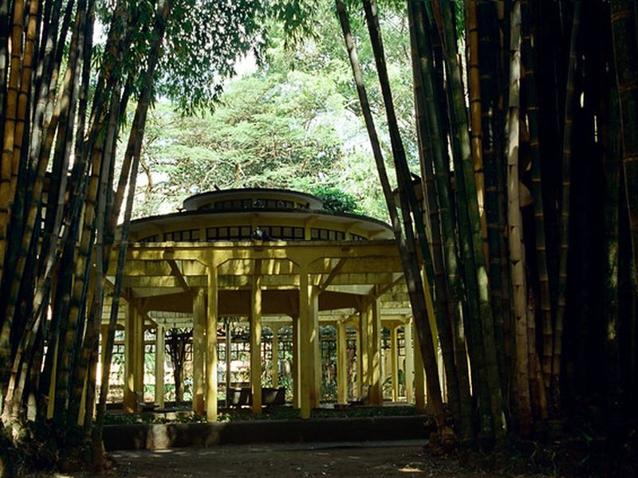
Parque da Água Branca
Parque da Água Branca is a sprawling urban green space in Sao Paulo, offering a variety of activities and attractions. Visitors can enjoy horseback riding, explore a geology museum, and see replicas of country estates. The park features lush greenery, expansive walking paths, and serene water ponds for relaxation. While some find the presence of numerous chickens and birds charming, others feel it disrupts the peaceful atmosphere.